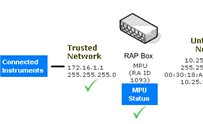
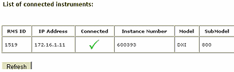

Replacing Console PC or PC Hard Drive on DxI System
This procedure describes how to replace the console PC or the PC hard drive on a DxI system.
- Replacement PC hard drives are available in several versions. These versions are specific to a PC model and might not be interchangeable. The type of hard drive must match the type of PC (NT or XP, Blue Dot or Orange Dot, No Dot, Small).
- A PC that has been upgraded to Windows XP can be reimaged using the XP Upgrade CD. Also, most PCs can be reimaged using the image CD shipped with the PC.
Refer to the Peripherals: Reimaging Console PC Hard Drive procedure.
Three different procedures are provided for replacing the PC or PC hard drive. Follow the procedure that matches your situation.- Replace the console PC with a new PC.
- Replace the hard drive on a tower PC.
- Replace the hard drive on a small PC.

-
Prepare the DxI instrument.
-
If the DxI instrument is connected to an LAS, then pause the connection unit to prevent LAS samples from loading during the repair process.
Note: Refer to the LAS: Servicing Instruments Connected to LAS procedure.
-
From the
Windows desktop, select
Windows > Start > Shut Down > Shut Down, and then power off the PC.
Note:
- Keep the analytical unit powered on.
- If Windows is not available, power off the PC. It might be necessary to hold in the power button on the PC for several seconds to power off the PC.
-
If the DxI instrument is connected to an LAS, then pause the connection unit to prevent LAS samples from loading during the repair process.
-
(Option 1) Replace the console PC.
Note: Refer to the Console PC Connector Identification (DxI and Access2) and Drawing - Network Connectivity - UCTA / Integrated System topics for details.
-
Make all the necessary connections to the new PC:
-
- Power cord, monitor, hand-held bar code reader, keyboard, and mouse.
- Touchscreen and LIS serial connections.
- AU, ProService (RMS), dynamic LAS network cables.
- Printer
- USB backup drive (if it is present).
- DxI only: If the replacement PC is a No Dot DTx and does not have a dual-NIC card, but a dual-NIC card is required (for dynamic LAS or RMS), then mount the dual-NIC PCB into the PC, but load the driver software later.
Note: Refer to the Peripherals: Installing Dual NIC Card" procedure in the DxI manual.
- If you are using file transfer to restore the database, then restore the database now.
Note: Refer to the Software: Database - Restoring Console PC Database Using File Transfer (DxI and Access 2) procedure.
-
-
Make all the necessary connections to the new PC:
-
(Option 2) Replace the hard drive on a tower PC.
Note: The Blue-dot and Orange-dot PC hard drives are the same. The software on the No-dot PC is not compatible with Blue-dot/Orange-dot PCs. Video, network, and modem errors are symptoms of incompatible hard drive software. Confirm that the hard drive has the correct software for the PC. If the software is incorrect, the HDD can be imaged using the image CD.
-
Remove the left-side cover from the PC (two screws).
Note: A flat screw driver can be used to pry the rear edge of the PC cover so that it slides toward the rear.
- Disconnect the ribbon cable and the power harness from the rear of the hard drive.
- Remove the hard drive bracket from the PC tower (one screw).
- Remove the hard drive from the bracket (four screws).
- Install the replacement hard drive into the bracket, and then install the bracket into the PC.
- Connect the ribbon cable and the power connector to the rear of the hard drive.
-
If you are using file transfer to restore the database, then restore the database now.
Note: Refer to the Software: Database - Restoring Console PC Database Using File Transfer (DxI and Access 2) procedure.
- Verify that internal PC cables were not dislodged during the hard drive installation.
- Mount the left side cover to the PC and install the cover mounting screws.
-
Remove the left-side cover from the PC (two screws).
-
(Option 3) Replace the hard drive on a small PC.
Note:
- The small PC hard drive is shipped blank and must be imaged using the image CD shipped with the PC.
- The No-dot/Blue-dot/Orange-dot software is not compatible with small PC. Video, network, and modem errors are symptoms of incompatible hard drive software. Confirm that the hard drive has the correct software for the PC. If the software is incorrect, the HDD can be imaged using the image CD.
-
Remove the metal PC cover (four screws), slide the cover 1 inch to the rear, and then remove the cover upward.
Note: A flat screw driver can be used to pry the rear edge of the PC cover so that it slides toward the rear.

- Remove the front face plate by pushing the two locking tabs on the top forward and pivoting the plate forward and down.
- Move the two yellow locking levers forward to release the drive module.
- Move the drive module up and forward slightly to allow access to the hard drive.
- Disconnect the SATA and power connectors from the hard drive.
- Depress the locking tabs on the drive mount, and then slide the hard drive out of the front of the drive module.
- Install the replacement hard drive into the drive module.
- Connect the SATA and the power connectors to the rear of the hard drive.
- Reassemble the PC drive bay.
-
Power on the PC, insert the Recovery and Reimaging Software CD into the CD-ROM drive, and follow the on-screen instructions to complete the hard drive reimaging process.
Note: If you are using file transfer to restore the database, then restore the database after the HDD reimage process finishes.
Refer to the Software: Database - Restoring Console PC Database Using File Transfer (DxI and Access 2) procedure.
- Verify that internal PC cables were no dislodged during the hard drive installation.
- Mount the PC face plate and the metal PC cover (four screws).
-
Open a connection between the console PC and the AU.
For Windows XP:
-
Press the
[Windows] key, and then select
Start
> Programs > Administrative Tools > Remote Desktop Connection to AU PC to start desktop sharing.
The remote desktop connects to the instrument computer and allows remote control of the instrument and applications. When connected, the Remote Desktop window displays the Windows XP desktop of the instrument.
-
To navigate the AU desktop:
- Use the scroll bars on the right and bottom of the window.
- Move down the scroll bar on the right to see the AU desktop toolbar,
- The PC toolbar is at the bottom of the screen.
-
To switch between the console PC display and the AU display:
- To return to the console PC display, use the minimize button at the top of the AUSETUPPC screen.
- To restore the AU Windows screen, select AUSETUPPC Remote Desktop Connection in the toolbar at the bottom of the console PC display.
For Windows 8:
-
Press the
Windows key, type
remote, and open the Remote Desktop Connection program.
The remote desktop connects to the instrument computer and allows remote control of the instrument and applications. When connected, the Remote Desktop window displays the Windows 8 desktop of the instrument.
- Type in 192.168.2.4 into the Computer field and select Connect.
- Enter user for User Name and tech for the password if prompted.
-
If prompted at the RDS warning screen, check the box for "Don't ask me again for connections to this computer" and select
Yes.
Note: For Windows 8, the default console IP address is 192.168.2.3 and the AU IP address is 192.168.2.4. Neither IP address changes during the software load process.
-
To switch between the console PC display and the AU display:
- To return to the console PC display, use the minimize button at the top of the AU Desktop screen.
- To restore the AU Desktop screen, press the Windows key, type remote, and open the Remote Desktop Connection program.
-
Press the
[Windows] key, and then select
Start
> Programs > Administrative Tools > Remote Desktop Connection to AU PC to start desktop sharing.
-
Clear the instrument critical event messages on the AU.
The following steps are accomplished from a remote connection to the AU desktop.Note: It might be necessary to scroll the window downward to uncover the icons on the lower portion of the AU display. The console PC taskbar can sometimes cover the AU taskbar. To correct this, right-click on the taskbar and select Properties. Deselect the Auto-hide the taskbar and Keep the Taskbar on top of other windows options, and then select OK.
- Use the Machine Control application.
- Select the Communications button on the right edge of the Machine Control application.
- Select the Clear CE storage button on the right edge of the Communications window.
- Select Yes to the Are you sure... message, and then select OK to the CE storage reset message.
- Select OK at the bottom to exit the communications application.
- If the Machine Control application is not visible, then use the
Y icon.
- Select the Y icon at the bottom right corner of the AU display, right-click the Y symbol, and then select Exit from the menu. This exits the instrument machine control program, if it is running.
- Double-click the My Computer icon at the top left corner of the display.
- Browse to the
C:\Au\CommCE.dat file and delete the file. Do not relaunch the AU Machine Control program, as this will create more unsent messages.
Note: This file contains the instrument critical event unsent messages, and can prevent software loading.
- Use the Machine Control application.
-
Close the desktop sharing connection.
For Windows XP:
- From the AU Desktop, select Start > Disconnect or select the X in the upper right corner.
- Select OK at the Disconnect Windows Session pop-up.
For Windows 8:
- From the AU Desktop, right click on Remote Desktop Connection icon on the upper left corner or on the task bar > Close or select the X in the upper right corner.
- Select OK at the Your remote session will be disconnected pop-up.
-
Install the software on the new hard drive.
Important: Verify the Console PC's "Date&Time" and "Time Zone" settings match the AU before installing software. If they don't match, then system will fail initialization with "Failed to Synchronize Clocks" error.
-
If the the console PC was replaced and the new console PC part number is B23083, then confirm that the dual core processor and hyper threading features have been disabled. For details on disabling these features, refer to the Mod 11505 - DxI Console PC (B23083) Configuration Update procedure.
Note:
- B23083 Console PCs obtained prior to September 10, 2014 still have dual core processing and hyper threading enabled.
- Mod 11505 needs to be completed for these PCs to ensure optimal compatibility with BCI system software.
- B23083 PCs ordered from Chaska after September 10, 2014 have been reworked to disable dual core processing and hyper threading.
- Mod 11505 only applies to the B23083 PC (small black PC with silver faceplate).
-
Insert the DxI software disk into the CD drive, then select or confirm actions when prompted by the on-screen messages.
Note: The software version must be the same as (or newer than) what is loaded on the AU.
-
When prompted to confirm the AU IP address, change the entry from 192.168.2.2 to 192.168.2.4, and then select
Next.
Note:
- If the AU IP address entered does not match the actual AU IP address or the AU is not communicating on the network, the installation exits,
- If the software installation stops with an error message Unsent Data stored on the instrument, then clear the instrument critical event messages.
- When the message Instrument version is the same. Do you wish to overwrite? is displayed, select Yes.
-
Select
Yes or
OK to all the additional prompts or error messages during the software installation.
Note:
- If the window is blank for several minutes during the installation process, check that the Yes or OK action message has not dropped into the background. Select Alt + Tab to display the open programs.
- If the software installation stops with an error message Unsent Data stored on the Instrument, clear the instrument critical event messages.
- Select the Yes, I want to restart my computer now option, and then select Finish.
-
After the computer restarts, when the message
There are no defined assays... is displayed, do the following:
- If restoring from backup, then select Cancel.
- If not restoring from backup, then insert the APF disk into the CD drive and select OK. The APF loads and the user interface launches. Remove the APF disk from the CD drive.
Warning: Do not initialize the instrument with Remap selected. This will corrupt the test counts of all the on-board reagents by resetting them to full.
-
If the the console PC was replaced and the new console PC part number is B23083, then confirm that the dual core processor and hyper threading features have been disabled. For details on disabling these features, refer to the Mod 11505 - DxI Console PC (B23083) Configuration Update procedure.
-
Restore the PC database from a backup.
Note: Refer to the Software: Restoring Console PC Database from Backup procedure.
-
Configure the system.
-
Select
Configure > Tests, and if the APF version that is displayed is not the current version, then update the APF.
Restoring from backup overwrites the APF with what was in use when the backup was made.
- Configure printer setup.
- Calibrate the touch screen.
- If the database was not useable copied or restored, then enable tests, calibrate assays, and configure QCs.
-
Select
Configure > Tests, and if the APF version that is displayed is not the current version, then update the APF.
-
Enable RMS or LAS or configure the UI for integrated operation.
- Enable the PROService Remote Management System (RMS).
- Select Start > Run, type iexplore, and press [Enter].
-
Type http:/172.16.1.1:8080/console on the address bar of the blank internet explorer window.
If the address of network connection 2 conflicts with the address of any other system connected to the RMS hub, then there is no communication. Use the ipconfig command in the CMD window at each PC to confirm that all connected PCs have a unique IP address.
- Enter Admin for name and password, select the Remember me option, and select OK.
- Select Tools > Internet options > Home page "Use Current" > OK to make the Rap Box Admin page the home page.
- Select the
Connected Instruments button on the
Admin window on the RAP Box to list the expected IP addresses of the connected systems.


-
Edit the local area connection 2 properties on the new PC to match the address shown for the previous enrollment of the system.
Select Start > Settings > Control Panel > Network Connections. Right-click Local Area Connection 2 and select Properties > (General tab) TCP/IP > Properties, and edit the address.
Verify that the address does not conflict with the address of any other system connected to the RMS hub.
- Select
PC Admin
> System Admin > Remote Management and enroll the system.
If remote management is not available, then:
- Select the Start > Run, type regedit, and then press Enter.
- In regedit, select the registry key.
- In Windows 8 select My Computer > HKEY_LOCAL_MACHINE > SOFTWARE > Beckman > NexStep > Console > System Setup
- In Windows 10 select My Computer > HKEY_LOCAL_MACHINE > SOFTWARE > WOW6432Node > Beckman > NexStep > Console > System Setup
- Right click Enable RMS, select Edit > Modify, change the 0 to 1, and then select OK.
- Confirm RMS function with Tech Support.
- Enable the LAS in the PC registry, if applicable.
- Select Start > Run, and then type regedit and press [Enter].
- In the left pane, select the registry key.
- In Windows 8 select My Computer > HKEY_LOCAL_MACHINE > SOFTWARE > Beckman > NexStep > Workgroup
- In Windows 10 select My Computer > HKEY_LOCAL_MACHINE > SOFTWARE > WOW6432Node > Beckman > NexStep > Workgroup
- In the right pane, highlight the PWPEnabled line, select Edit > Modify, change the Value data: to 1, and then select OK.
- Highlight the PWPServerIp line, select
Edit > Modify, change the
Value data: to
134.217.96.181, and then select
OK. If there will be more than one DxI instrument connected to the LAS, use these IP addresses:
- DxI 1 IP 134.217.96.181
- DxI 2 IP 134.217.96.182
- DxI 3 IP 134.217.96.183
- DxI 4 IP 134.217.96.184
- Highlight the PWPTcpIpPort line, select Edit > Modify, change the Value data: to beca, and then select OK.
- Exit the Registry Editor .
- Reconnect the serial RS-232 cable between the DxI AU and the connection unit, if it was disconnected previously.
- In the user interface, select Configure > LIS/LAS > LAS > Online > OK.
- On the DxI console, select Diagnostics > LIS/LAS > LAS > Track Comm. Test .
- Verify that the response is COMM diagnostics test passed, and then exit Diagnostics.
- Verify that the mode selector on the connection unit keypad is set to Auto.
-
At the PrepLink console, deactivate the Loading Paused option for this connection unit.Note: Refer to the LAS: Servicing Instruments Connected to LAS procedure.
- Observe several LAS samples as they process through the connection unit to the DxI, and verify that the samples aspirate and run on the DxI successfully.
- Configure the user interface for integrated operation.
- Select the Start > Run, and then type regedit and press Enter.
- In
regedit, select the registry key.
- In Windows 8 select My Computer > HKEY_LOCAL_MACHINE > SOFTWARE > Beckman > NexStep > Workgroup
- In Windows 10 select My Computer > HKEY_LOCAL_MACHINE > SOFTWARE > WOW6432Node > Beckman > NexStep > Workgroup
- Select DxIToDxCServerIP > Edit > Modify, and then change the Value data to 134.217.96.184 and select OK. Exit regedit.
- Ensure the local area connection 3 is set to the same address as the DxIToDxC Server IP (134.217.96.184).
For two integrated systems networked, this address may be 134.217.96.185. Check the Chem console for the specific address. Refer to the "Drawing - Network Connectivity" for network cable connection details.
- In the user interface select Configure > PC Admin > System Admin > Integrated System Setup, enter the password Access2Support, and then choose the type of integrated system from the list.
- The PC and AU will reboot after the configuration change is complete.
- Enable the PROService Remote Management System (RMS).
-
Verify the proper operation of the system.
-
Run QC samples and verify that the results are within customer specifications and there are no problems posting results to the QC database.
Warning: IND flagged results or QC fails can be an indication of incorrect reagent pack test count status.
- Remove all cover interlock switch bypass devices and close all instrument covers.
-
Run QC samples and verify that the results are within customer specifications and there are no problems posting results to the QC database.